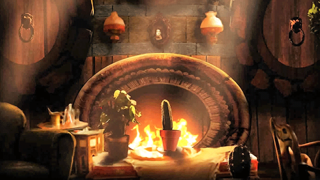
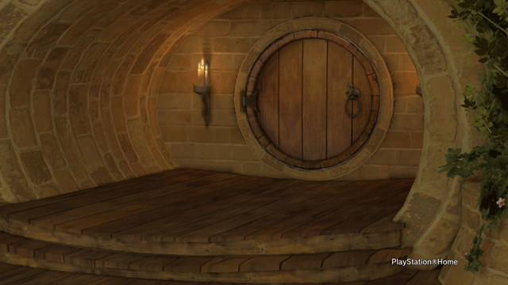
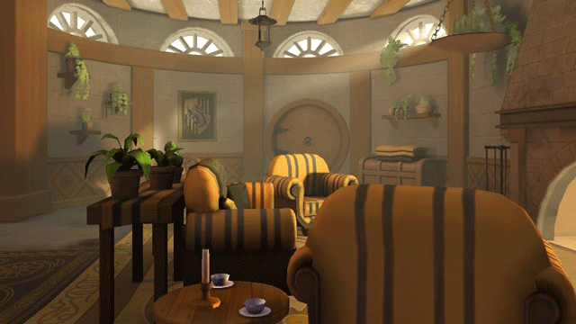
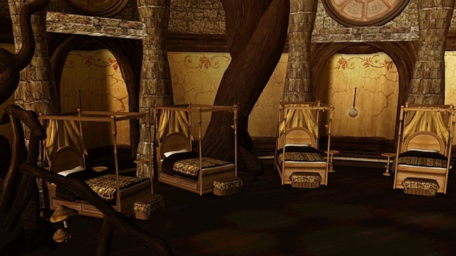

The Basement
 The Hufflepuff Basement serves as the Hufflepuff Common Room at Hogwarts School of Witchcraft and Wizardry. In general, it sports several motifs, such as circles, nature, copper and the colours yellow and black (all associated with the house). It also emphasises comfort, said to be "the cosiest common room of them all". It is at one floor below the ground and is very sheltered from the elements, generally allowing students to sleep easier than those in the towers (like Gryffindor and Ravenclaw).
Entrance
 The entrance to the common room is located "in a nook on the right hand side of the kitchen corridor", concealed behind a stack of barrels. In order to reveal the entrance, no password is required. Instead, one must tap the barrel two from the bottom, middle of the second row, in the rhythm of ‘Helga Hufflepuff’, which will make the lid swing open, exposing a passageway that will lead to the basement when crawled through. However, if the wrong lid is tapped or the wrong rhythm is used, the intruder will be doused in vinegar and barred access
Common Room
 The actual basement itself is round, earthy, low-ceilinged, welcoming, warm, and sunny. There are lots of yellow hangings, burnished copper, and overstuffed sofas and armchairs upholstered in yellow and black and circular windows that provide a vista of "rippling grass and dandelions". There is also a large, honey coloured, wooden mantelpiece with carvings of badgers on it. This is located underneath a portrait of the house's founder, Helga Hufflepuff.
The head of house, Pomona Sprout, also teaches Herbology and as such brings many interesting plants in to decorate the common room (some of which dance and talk), placing them on the windowsills or having them hang from the ceiling, encouraging interest in Herbology (and hence part of why Hufflepuffs tend to be good at it).
Dormitories
 The Hufflepuff dormitories are also located in the cellar and have perfectly circular doors, with lots of little underground tunnels leading off from the common room.[3] One of them leads to the girls' dormitory, the other to the boys'. In each dormitory four-poster beds are covered in patchwork quilts. The dormitories are illuminated by warm copper lamps, and copper bed-warmers hang on the wall, in case of cold feet